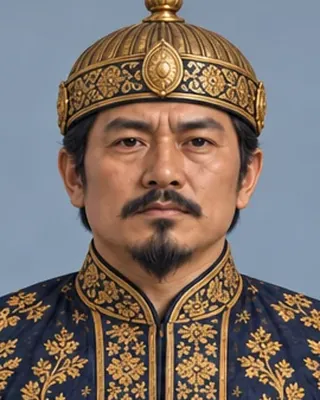

1380–1387
ত্যাও খামতি
1380–1389 · Seventh Ahom king

Brother of Sutuphaa; assassinated by nobles in 1389 (a family tree gives 1387). He led an unsuccessful expedition against the Chutias.
Followed by an interregnum until 1397.
Record confidence: medium.